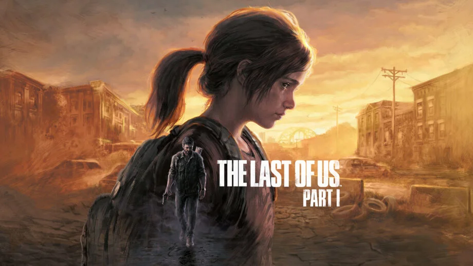
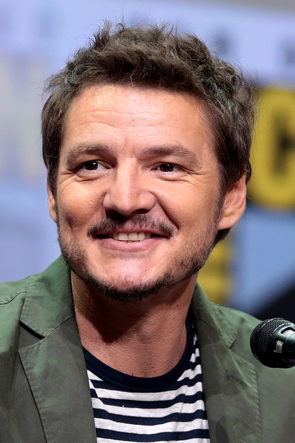

The Last of Us
Detalles
Creador: Neil Druckmann y Bruce Straley
Programador: Naughty Dog
Género: Acción, Ciencia ficción, Aventura, Survival Horror
Videojuego: The Last Of Us Part I y The Last Of Us Part II El primer juego, fue lanzado en 2013 para PlayStation 3 y posteriormente se lanzó una versión remasterizada para PlayStation 4 en 2014.El segundo juego, The Last of Us Part II, se lanzó en 2020 exclusivamente para PlayStation.
The Last Of Us @Chris Smith by Trusted Reviews
Adaptaciones cinematográficas: The Last Of Us y ya está confirmada una segunda temporada basada en la parte II
Trailer de The Last Of Us en Youtube:
Sinopsis
Sinopsis de The Last Of Us Part I:
La historia sigue a Joel, un hombre que ha perdido a su hija en un mundo postapocalíptico infestado por una infección que convierte a los humanos en monstruos caníbales. Joel se convierte en el protector de Ellie, una joven que podría ser la clave para encontrar una cura para la infección. Juntos, atraviesan peligrosos territorios mientras luchan contra otros sobrevivientes y criaturas infectadas.
Sinopsis de The Last Of Us Part II:
La historia se desarrolla cinco años después de los eventos del primer juego y sigue a Ellie, ahora adolescente, en su búsqueda de venganza en un mundo aún más peligroso y hostil. Ellie deberá enfrentarse a una serie de desafíos emocionales y físicos mientras se adentra en territorios desconocidos y se enfrenta a enemigos mortales, todo mientras lucha por su propia supervivencia y su sentido de justicia en un mundo brutal y sin ley.

Pedro Pascal actor que da vida a Joel @Gage Skidmore by Wikimedia Commons
Personajes
Los personajes que conforman la saga de The Last Of Us son:
Joel
Es el protagonista principal de la historia, un hombre endurecido por la pérdida y la tragedia en un mundo post-apocalíptico. Se convierte en el mentor y figura paterna de Ellie, a quien se le encomienda proteger y guiar a través de una peligrosa travesía.
Ellie
Es una joven valiente e inteligente que es inmune a la infección que ha diezmado la población mundial. Se une a Joel en su búsqueda de la seguridad y la supervivencia en este mundo peligroso, y pronto se convierte en una fuerza vital para su equipo.
Tess
Es una mujer fuerte y astuta que trabaja junto a Joel como contrabandista en la ciudad de Boston. Juntos, forman un equipo sólido y peligroso, enfrentando peligros y desafíos para sobrevivir en un mundo brutal.
Marlene
Es la líder de los Luciérnagas, una organización revolucionaria que busca encontrar una cura para la infección que ha devastado la población. Aunque ella y Joel tienen diferentes perspectivas, ambos tienen un objetivo común: proteger a Ellie a toda costa.
Bill
Es un solitario y paranoico superviviente que vive en una pequeña ciudad en las afueras de Boston. Tiene habilidades útiles y conocimientos técnicos que ayudan a Joel y Ellie en su viaje, aunque su relación es tensa debido a su naturaleza desconfiada..
Otros personajes:
- Tommy
- Henry
- Sam
- Riley
- Frank
Opinión personal
Una de las cosas que más me gustó de la serie fue la forma en que los personajes están tan bien desarrollados que realmente te importa lo que les sucede. La relación entre Joel y Ellie es particularmente conmovedora y se siente muy auténtica, lo que hace que sea difícil no preocuparte por ellos durante todo el juego.
Además, la ambientación es impresionante. Los desarrolladores han creado un mundo postapocalíptico realmente creíble, lleno de peligros y situaciones desesperadas. Los gráficos y la banda sonora también son impresionantes, lo que ayuda a sumergirte aún más en la experiencia.
Símbolo de The Last Of Us @ Naughty Dog y Sony Interactive Entertainment by Wikimedia Commons
Si quieres acceder a más información puedes acudir a la página de Wikipedia
Si no la has visto, te recomiendo que veas el trailer y te adentres en este mundo ⬆️(da click en la flecha)